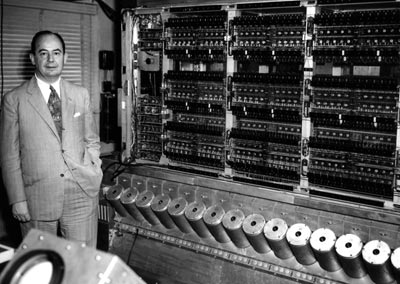

ARCHITECTURE DES ORDINATEURS - MODELE DE VON NEUMANN¶
Repères historiques¶
De l’objet conceptuel…¶
En 1936, Alan Turing - un des plus brillants mathématiciens du XX e siècle - décrit une machine
abstraite pour donner un support formel aux notions d’algorithme et de calcul : la fameuse «machine de Turing». Tout algorithme (procédé systématique de calcul) peut être réalisé par une machine de Turing.
Il s’agit d’un automate imaginaire muni d’un programme (sous la forme d’une
table de transition entre états) et pouvant lire et écrire des caractères sur un ruban de longueur illimitée.
Le coup de génie de Turing est de démontrer l’existence d’une Machine Universelle: si on fournit à cette dernière la table de transition d’une machine de Turing particulière, autrement dit le programme d’un algorithme, elle est capable de reproduire le fonctionnement de cette machine, donc d’exécuter le programme en question!
Pour les plus curieux: voir article sur https://interstices.info/alan-turing-du-concept-a-la-machine/
Au modèle d’architecture de von Neumann¶
En 1945, John von Neumann (1903-1957), mathématicien américano-hongrois qui avait déjà rencontré Alan Turing et qui connaissait ses travaux, publia un rapport dans lequel il définit le modèle de l’ordinateur à «programme enregistré». La mémoire de cet ordinateur contient à la fois les programmes et les données, comme dans la machine de Turing universelle!

Modèle d’architecture séquentielle (dite de von Neumann)¶
Un des grands points faibles du premier calculateur électronique l’ENIAC était le fait que les données étaient lues sur cartes perforées, alors que le programme était représenté sur un support externe, sous la forme d’un panneau de connexion analogue à celui d’un standard téléphonique. L’idée fondamentale de John von Neumann a été de stocker les données et les instructions des programmes en mémoire centrale.
Les composants essentiels¶
En juin 1945 dans la première version du rapport sur la conception de l’EDVAC John von Neumann décrit un schéma d’architecture d’un calculateur organisé autour des éléments suivants:
une unité centrale ou processeur (on dit aussi CPU pour Central Processing Unit), formée d’une unité arithmétique et logique (UAL) et d’une unité de commande (Control Unit);
la mémoire;
des unités d’entrée/sortie qui permettent de communiquer avec l’extérieur.
Ces éléments étant reliés entre eux par des bus.

L’unité arithmétique et logique (UAL)¶
Elle est chargée d’effectuer le traitements des opérations arithmétiques ou booléennes:
addition, multiplication, soustraction, division
ET, OU et NON logiques;
décalages de bits dans des registres
L’UAL est entourée généralement de registres de données (mémoires rapides) et d’un accumulateur qui accueille les opérandes des opérations ou le résultat.
L’unité de commande ou unité de contrôle¶
Elle est chargée de contrôler les échanges, gérer l’enchainement des instructions et les transferts entre les différents éléments. On y trouve, entre autres:
un compteur ordinal ou “program counter PC” qui contient l’adresse de la prochaine instruction;
un registre d’instruction “IR” ou “CIR” (current instruction register) qui contient l’instruction lue;
un décodeur d’instruction (ou de fonctions);
un registre d’adresse “MAR” (memory address register) qui contient l’adresse de l’instruction à lire;
une horloge.
Les mémoires¶
Le rôle des mémoires est d’enregistrer les programmes et les données pouvant être executées par le microprocesseur. On peut classer les mémoires en deux grandes catégories:
les mémoires de travail;
les mémoires de stockage.
Les registres sont des mémoires internes au microprocesseur. Ils sont très rapides et en nombre limité.
La mémoire cache est un intermédiaire entre une unité du microprocesseur et la RAM. Elle stocke des données provenant de celle-ci et permet ainsi d’accélérer leurs traitements.
Les mémoires vives ou RAM (Random Access Memory) permettent des opérations de lecture et d’écriture. Elles sont volatiles.
Les mémoires accessibles uniquement en lecture sont connues sous le nom de ROM (Read Only Memory).
Les mémoires de stockage (ou mémoire de masse) se présentent souvent sous la forme de disque.
Même si la fonction est la même (mémorisation de l’information), toutes ces mémoires ont des caractéristiques différentes.

Les entrées-sorties¶
Les périphériques d’entrée-sortie permettent à l’ordinateur de communiquer avec l’homme ou d’autres machines. Ils étaient initialement commandés par l’unité centrale. Depuis le début des années 1960 ils sont sous le contrôle de processeurs autonomes.
Exemple de fonctionnement d’un périphérique d’entrée-sortie : le disque dur. Supposons que l’unité centrale veuille lire un bloc sur le disque dur. Les principales étapes sont les suivantes:
l’unité centrale formule cette demande en écrivant à l’adresse mémoire du contrôleur de disque;
le contrôleur de disque se charge d’écrire directement en mémoire les octets lus depuis le disque;
le contrôleur de disque signale la fin de la lecture sur le disque par le biais d’un mécanisme d’interruption (non abordé ici) ;
l’unité centrale execute la routine d’interruption puis reprend le flot d’instructions où il a été interrompu.

Les bus¶
Les différentes unités sont interconnectées par des systèmes de câblage appelé bus. Autour du processeur on trouve:
le bus d’adresse (unidirectionnel);
le bus de données (bidirectionnel);
le bus de contrôle (bidirectionnel).
Remarque: les ordinateurs récents possèdent d’autres types de bus.
Qu’en est-il aujourd’hui ?¶
Presque 75 ans après sa présentation le modèle d’architecture de Von Neumann est toujours valable.
Cependant, les différences de vitesse entre le processeur et la mémoire ont conduit les fabricants d’ordinateur à intercaler des mémoires caches très rapides entre la mémoire centrale et le processeur.
Par ailleurs, les ordinateurs actuels comportent plusieurs processeurs (on dit aussi plusieurs “coeurs”) intégrés sur une même puce. Cette tendance au “parallélisme” dans le traitement et la circulation des informations a conduit à une augmentation de la puissance de calcul sans augmenter la fréquence des processeurs individuels.
Enfin, une différence, peu significative, par rapport au modèle original est que les dispositifs d’entrées/sorties peuvent communiquer avec la mémoire par le biais de contrôleur dédié (DMA). Si bien que le schéma actuel serait plutôt le suivant:

Alternative: architecture de Harvard¶
Dans le modèle d’architecture de Harvard les instructions et les données sont situées dans des mémoires différentes et sont véhiculés sur des bus indépendants.

La vitesse d’execution est de fait améliorée car en un seul cycle d’horloge on peut récupérer les données et le code instruction.
L’architecture de Harvard se retrouve beaucoup dans les systèmes embarqués.